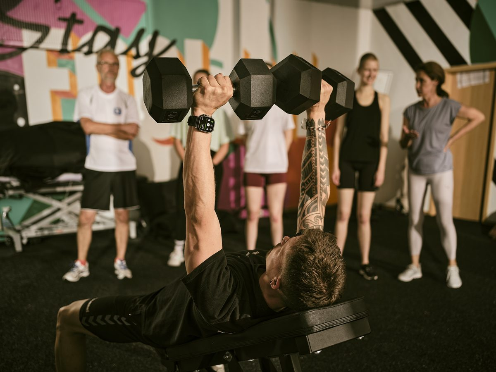

🪑
Bürojob-Verspannung
Trapezius- und Rhomboideen-Verspannung durch dauerhaftes Sitzen am Bildschirm.
Nacken & HWS · Münster
HWS-Syndrom, Verspannungen, Spannungskopfschmerz aus dem Bürojob — wir behandeln gezielt mit Manueller Therapie und Stabilisationstraining. Termin meist binnen 48 h.

Top-Bewertung bei Google
Hunderte zufriedene Patient:innen
Termin in 48 h
Auch bei akutem Steifhals
Manuelle Therapie
Zertifizierte Therapeut:innen
Top-Bewertung bei Google
Hunderte zufriedene Patient:innen
2 Standorte
Scharnhorst & Friedrich-Ebert
Wir behandeln
Trapezius- und Rhomboideen-Verspannung durch dauerhaftes Sitzen am Bildschirm.
Schmerzen, Bewegungseinschränkung, ausstrahlend in Arme oder Hinterkopf.
Kopfschmerzen, die vom Nacken ausstrahlen — sehr gut behandelbar.
Plötzliche Bewegungssperre nach falscher Schlafhaltung — schnell gelöst.
HWS-bedingter Schwindel oder Ohrgeräusche — Manuelle Therapie hilft oft schnell.
Zervikaler Bandscheibenvorfall — konservative Therapie ist meist erfolgreich.
Behandlung
Sanfte Mobilisation der Halswirbel, Lösung von Blockaden — sicher und ohne ruckartige Manipulation.
Direkte Lösung verspannter Muskelpunkte im Schulter-Nacken-Bereich.
Aktivierung der tiefen Halsmuskulatur — damit Verspannungen nicht zurückkommen.
Sitzhaltung, Bildschirm-Höhe, Übungen für den Office-Alltag.
Patientenstimmen
„Sehr gut aufgehoben. Kompetent und freundlich."
„Extrem kompetente Behandlung — erstklassig."
„Wissenschaftsbasierter Ansatz — einmalig in Münster."
Standorte
Aus unserem Blog — Hintergründe, Therapie-Ansätze und was die Forschung sagt.
Häufige Fragen
Wärme statt Kälte (chronische Verspannung), sanfte Bewegung statt Schonhaltung, frühe Behandlung. Bei plötzlichem Steifhals oder Schwindel: Termin binnen 48 h.
Ja. Spannungskopfschmerzen entstehen häufig durch verspannte Nacken- und Kaumuskulatur. Wir behandeln die Ursache — nicht nur das Symptom.
Akute Verspannungen lösen sich oft in 4–6 Einheiten. Bei chronischen Beschwerden ergänzen wir Manuelle Therapie mit gezieltem Training.
Ergonomie hilft, ist aber nicht alles. Schlechte Haltung kommt von schwacher Tiefenmuskulatur — die müssen wir gezielt aktivieren.
Patientenstimmen
„Ich fühle mich im Rehab Five sehr gut aufgehoben und freue mich immer auf meine Termine."
„Freundliche Leute und extrem kompetente Behandlung sind hier selbstverständlich."
„Nach diversen Sprunggelenks-Bänderrupturen habe ich nach einer modernen Praxis gesucht."
Termin sichern
Schreib uns kurz, was los ist — wir melden uns binnen 48 Stunden.